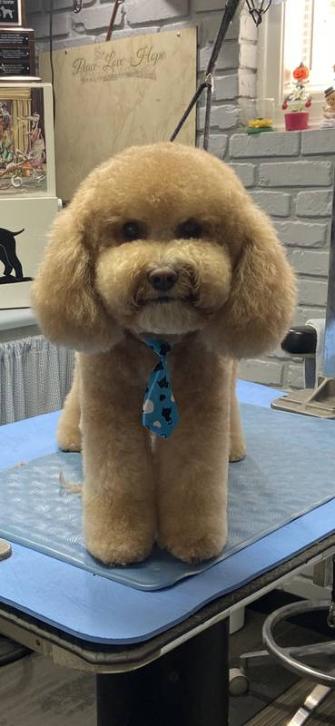
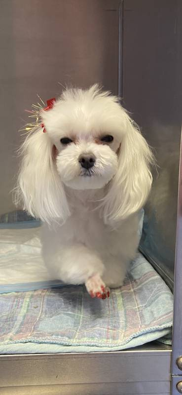
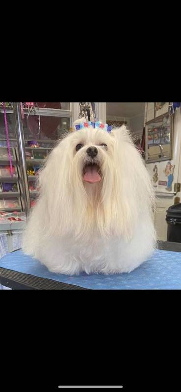
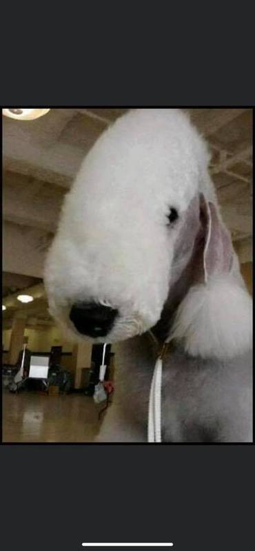
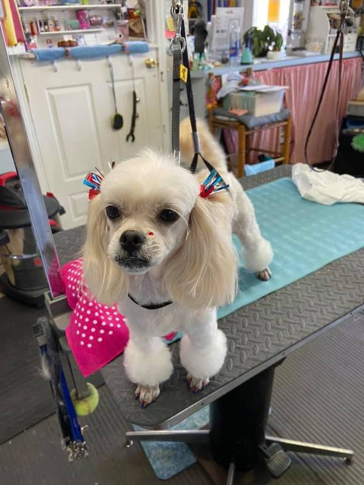
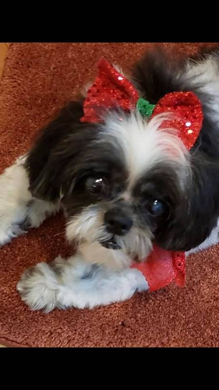

National Certified Master Groomer. Award-winning stylist. Serving South Mississippi for over 57 years.
Full-service grooming from a certified master. Call to book your dog's appointment.
Bath, cut, nails, and finishing touches.
A thorough wash and brush-out that leaves coats clean and soft.
Breed cuts and pet trims from an award-winning stylist.
Quick, careful nail care to keep paws healthy.
Open Monday through Friday, 8am to 3pm. Closed weekends.
Real dogs, groomed at K-9 Paws.






“We had an amazing first experience with Sandy grooming my Cavalier King Charles Spaniel, Nola! Sandy is incredibly kind, patient, and extremely knowledgeable. You can tell she’s a true expert in dog grooming…”
“Your fur baby will leave here looking cute as a button. The owner is very patient and does a meet and greet with them before they begin any services to make sure the pup is comfortable…”
“Coco spa day and she knows it. Lol”
“I’ve known Sandy Bethea for more than 14 years and she’s groomed our dogs and cared for them as if they were her very own show dogs! She’s an award winning show dog groomer…”
“Paws down, best groomer around, and I’ve never seen my two babies come home so happy after getting their hair done. Sandy is a caring, attentive lady…”
“I have a Pomeranian, and K-9 Paws was the first dog groomer to give my dog a perfect cut. Everywhere else I’ve gone before has left his fur too long, or his cut unbalanced and uneven…”
“She listens to how I want my dogs groomed. She always has great recommendations for different styles and cuts. I’ve always been pleased with the final result…”
“I’ll be straight with ya. I didn’t use their service but of no fault of theirs. They were kind, patient, and understanding to my situation…”
“Her work is most professional! People ask me where they are groomed. The dogs look precious for their age. (10 & 11). The pricing is excellent and the grooming is done in a timely manner.”
“I called and got a next day appointment for my 9 year young Shih Tzu. It took approximately 90 minutes from start to finish. They did an awesome groom on her! I will definitely recommend and return!”
K-9 Paws has been grooming South Mississippi's dogs for over five decades. Mz. Sandy is a National Certified Master Groomer and award-winning stylist, and regulars say their dogs come home happy.
One groomer, one shop, decades of experience. That is the whole pitch.
450 E Pass Rd #106
Gulfport, MS 39507
(228) 896-7297
Call to book. Ask for Mz. Sandy.
| Monday | 8:00 AM to 3:00 PM |
| Tuesday | 8:00 AM to 3:00 PM |
| Wednesday | 8:00 AM to 3:00 PM |
| Thursday | 8:00 AM to 3:00 PM |
| Friday | 8:00 AM to 3:00 PM |
| Saturday | Closed |
| Sunday | Closed |